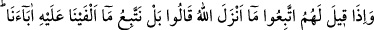
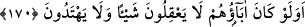

tayyib helâldir. Fakat her helâl tayyib değildir. Rasûlullah (s.a.)’ın buyurduğu gibi:
“Allah tayyibdir, ancak tayyibi (yâni şüphe ve ayıbla karışık olmayanı) kabûl eder.”
denilebilirse de[58] “Allah helâldir” denilemez.
Helâl ve temiz şeyleri yemek, insanı Allah’a itâata ve şeytana uymaktan sakınmaya
sevkeder. Zira sâlih ameller helâl lokmaların neticesidir. Meşrû yoldan helâl kazanç
sağlamak bütün peygamberlerin sünnetidir. Nitekim Mesnevî’de gelmiştir.
Helâl lokmadan ilim ve hikmet doğar.
Helâl lokmadan aşk ve rikkat-i kalb oluşur.
Lokmanda hased ve tuzak gördünse bil ki
Yediğin haramdır, zira haramdan cehâlet ve gaflet doğar.
Hiç buğday ekip arpa biçmek olur mu?
Hiç atın eşek yavrusu doğurduğu görülmüş mü?
Lokma tohumdur, onun meyvesi düşüncelerdir.
Lokma denizdir, düşünceler onun cevheridir.
Helâl lokmadan ağızda zâhir olan,
Hizmet arzusu ile öbür âleme yönelmedir.
Meşrû yoldan helâl kazanç, peygamberlerin sünnetidir. “Kesb”te (kazanç sağlamada)
pekçok fayda vardır. Bir kere ticâret ve zirâatta kullanılan mal bu sâyede ziyâdeleşir.
Ayrıca ağaç dikmek ve zirâat yapmak sûretiyle, kuşların ve başka canlıların onlardan
istifade etmesi bir sadakadır. Çalışıp kâr elde etmeye uğraşan kişi tenbellik ve boş
şeylerle uğraşmaktan kurtulur, nefsinin arzuları kırılır ve azgınlığı azalır. Kesb, iki
cihanda yüz karası olan fakirlikten kurtulma vâsıtasıdır.
İnsan âilesinin geçimi için çalışmaya başlayınca hafaza melekleri ona: “Allah senin
bu çalışmanı mübârek ve bereketli kılsın. Kazandığını da Allah senin için cennette azık
yapsın.” derler. Yer ve gökteki bütün melekler “âmin” diyerek bu duâya iştirak ederler.
Kazanç yollarının en güzeli cihâd, sonra ticâret, sonra zirâat ve daha sonra da san’attır.
170. Onlara (müşriklere): Allah’ın indirdiğine uyun, denildiği zaman onlar,
“Hayır! Biz atalarımızı üzerinde bulduğumuz yola uyarız” dediler. Ya ataları bir
şey anlamamış, doğruyu da bulamamış idiyseler?
Bu âyet, Kur’ân-ı Kerîm’e ve Allah Teâlâ’nın indirdiği diğer açık mûcize ve delillere
uymayı kabûl etmeyip taklîd yolunu tutan Kureyş kâfirleri ve müşrik araplar hakkında
inmiştir.
İnsanlardan müşrik olanlara, nasîhat ve irşâd yoluyla, “Allah’ın indirdiği kitaba tâbi
olun. O’nun Kur’ân-ı Kerîm’inde helâl saydığını helâl saymak, haram dediğini de haram